<script async src="https://pagead2.googlesyndication.com/pagead/js/adsbygoogle.js?client=ca-pub-1532367766505583"
     crossorigin="anonymous"></script>
<!-- DARK-STYLED SECTION with your long article + updated affiliate links using tag=gritgearhq-20 -->
<link rel="preconnect" href="https://fonts.googleapis.com">
<link rel="stylesheet" href="https://fonts.googleapis.com/css2?family=Orbitron:wght@500;700&family=Inter:wght@400;600;800&display=swap">

<style>
  :root{
    --bg:#0b0f12; --panel:#121821; --ink:#e8edf2; --muted:#9aa3ad;
    --line:#1f2a35; --accent:#ff7a00; --glow:0 0 0 1px rgba(255,122,0,.18), 0 10px 35px rgba(0,0,0,.6);
  }
  .amish-wrap{background:var(--bg); color:var(--ink); font-family:Inter,system-ui,Segoe UI,Roboto,Arial,sans-serif; line-height:1.65;}
  .amish-wrap a{color:var(--accent); text-decoration:none}
  .amish-max{max-width:1100px; margin-inline:auto; padding-inline:clamp(16px,4vw,28px)}
  .amish-hero{margin:18px auto 24px; position:relative; border-radius:16px; overflow:hidden; box-shadow:var(--glow);
    background:#0a0a0a url('berne.jpg') center/cover no-repeat; min-height:48vh;}
  .amish-hero::after{content:""; position:absolute; inset:0; background:linear-gradient(180deg, rgba(0,0,0,.55), rgba(0,0,0,.85) 70%);}
  .amish-hero .inner{position:relative; z-index:2; padding:clamp(22px,6vw,56px)}
  .amish-title{font-family:Orbitron,system-ui; font-weight:700; margin:0 0 10px; font-size:clamp(28px,3.6vw,44px)}
  .amish-deck{max-width:800px; color:#c9d2da; font-size:1.05rem}
  .cta-row{display:flex; gap:12px; flex-wrap:wrap; margin-top:18px}
  .cta-btn{display:inline-flex; align-items:center; gap:10px; padding:12px 18px; border-radius:999px;
    background:linear-gradient(180deg, #ff7a00, #e06100); color:#070809; font-weight:800;
    box-shadow:0 4px 20px rgba(255,122,0,.28); transition:transform .12s ease, box-shadow .12s ease;}
  .cta-btn:hover{transform:translateY(-1px); box-shadow:0 10px 34px rgba(255,122,0,.35)}
  .cta-ghost{background:#1a232e; color:#e6edf4; border:1px solid #2a3543}

  .amish-article{background:linear-gradient(180deg,#0f141a,#0b0f12); border:1px solid var(--line); border-radius:16px; box-shadow:var(--glow); padding:clamp(18px,3.2vw,28px); margin:26px auto}
  .amish-article h2{font-family:Orbitron,system-ui; margin-top:26px; color:#f0f3f7}
  .amish-article p, .amish-article li{color:var(--ink)}
  .amish-article hr{border:none; border-top:1px solid var(--line); margin:22px 0}

  .amish-gallery{display:grid; grid-template-columns:1fr; gap:16px; margin:24px 0}
  @media(min-width:760px){ .amish-gallery{grid-template-columns:repeat(12,1fr)} }
  .amish-gallery figure{background:var(--panel); border:1px solid var(--line); border-radius:14px; overflow:hidden; margin:0; box-shadow:var(--glow)}
  .amish-gallery img{width:100%; display:block; aspect-ratio:16/10; object-fit:cover}
  .amish-gallery .span-6{grid-column:span 6}
  .amish-gallery .span-7{grid-column:span 7}
  .amish-gallery .span-5{grid-column:span 5}
  .amish-gallery .span-12{grid-column:1/-1}
  .amish-gallery figcaption{padding:10px 12px; color:var(--muted); font-size:.95rem}

  .gear-wrap{margin:34px 0}
  .gear-head{display:flex; align-items:end; justify-content:space-between; gap:12px}
  .gear-grid{display:grid; gap:18px; margin-top:16px}
  @media(min-width:720px){ .gear-grid{grid-template-columns:repeat(3,1fr)} }
  .gear-card{background:var(--panel); border:1px solid var(--line); border-radius:16px; overflow:hidden; display:flex; flex-direction:column; box-shadow:var(--glow)}
  .gear-card img{width:100%; aspect-ratio:4/3; object-fit:cover; background:#0f141a}
  .gear-card .pad{padding:14px}
  .gear-card h3{margin:.2rem 0 .4rem; font-size:1.06rem; font-weight:800}
  .gear-card ul{margin:.35rem 0 .6rem; padding-left:18px; color:#c6ced6}
  .gear-card .buy{margin-top:auto}
  .buy a{display:inline-block; width:100%; text-align:center; padding:12px 14px; border-radius:10px;
    background:linear-gradient(180deg,#ff7a00,#e06100); color:#101318; font-weight:900; letter-spacing:.3px;
    border:0; box-shadow:0 8px 30px rgba(255,122,0,.28)}
  .disclosure{color:#97a1aa; font-size:.9rem; margin-top:10px}
  .divider{height:1px; background:var(--line); margin:26px 0}
  .back-top{display:block; text-align:center; margin:22px 0 10px; color:#b7c2cd}
</style>

<section class="amish-wrap" id="amish-winter-heat">
  <!-- HERO -->
  <header class="amish-hero amish-max">
    <div class="inner">
      <h1 class="amish-title">How the Amish Stay Warm in Winter</h1>
      <p class="amish-deck">Old-world heat without the grid — wood &amp; coal stoves, window quilts, humidity, and daily rhythm you can copy today.</p>
      <div class="cta-row">
        <a href="#amish-gallery" class="cta-btn cta-ghost">📸 Photo Gallery</a>
      </div>
    </div>
  </header>

  <!-- LONG ARTICLE: injected content you provided -->
  <div class="amish-article amish-max">
    <h2>Rule #1: Heat the Person, Then the Space, Then the Structure</h2>
    <p>Most people try to heat the whole house first. That’s backwards. The Amish approach stacks in three layers, smallest to largest, so you get comfort fast and waste less fuel.</p>
    <ul>
      <li><strong>Person:</strong> Wool base layers, aprons, shawls, caps, and thick socks. Target the heat leaks—head, neck, wrists, ankles. A wool cap can make a 55°F room feel like 62°F. Fingerless gloves + wrist warmers keep hands useful without cranking the fire.</li>
      <li><strong>Space:</strong> Warm the room you’re actually using: kitchen, parlor, workshop, schoolroom. Shut doors to unused rooms. Hang a heavy curtain across wide openings and treat it like a heat valve—open when the stove is roaring, closed when it’s coaling.</li>
      <li><strong>Structure:</strong> Only after person and space are dialed in do you chase whole-house gains—tight windows, storm doors, attic insulation, air sealing. Big wins, but not Step One.</li>
    </ul>
    <p><strong>Copy this today:</strong> Put a coat rack and slippers by the warm room; keep wool layers there. Hang a curtain rod over the widest doorway near your heat source and use a moving blanket until you sew something nicer. You’ll feel the difference in an hour.</p>
<!-- Drop this right under your <h2>Stoves That Do the Heavy Lifting</h2> -->
<style>
  .stove-card{
    display:grid; gap:16px; align-items:center; margin:18px 0 24px;
    grid-template-columns:1fr; padding:16px;
    background:var(--panel,#121821); color:var(--ink,#e8edf2);
    border:1px solid var(--line,#1f2a35); border-radius:16px;
    box-shadow:0 0 0 1px rgba(255,122,0,.12), 0 10px 35px rgba(0,0,0,.55);
  }
  .stove-card img{
    width:100%; max-width:520px; border-radius:12px; display:block; background:#0f141a; object-fit:cover;
  }
  .stove-card h3{margin:0 0 6px; font-weight:800; font-size:1.14rem}
  .stove-cta{
    display:inline-block; margin-top:10px; padding:12px 16px; border-radius:10px; text-align:center;
    background:linear-gradient(180deg,#ff7a00,#e06100); color:#101318; font-weight:900; letter-spacing:.3px;
    box-shadow:0 8px 30px rgba(255,122,0,.28);
  }
  @media (min-width:860px){
    .stove-card{grid-template-columns:460px 1fr}
    .stove-card img{max-height:300px}
  }
</style>

<div class="stove-card">
  <a href="https://amzn.to/47BQRHz?tag=gritgearhq-20" target="_blank" rel="nofollow sponsored noopener">
    
  </a>
  <div>
    <h3>Off-Grid Cookstove + Heater</h3>
    <p style="margin:0 0 10px; color:#c9d2da;">
      Great for cabins, wall tents, and emergency heat. Fold-out racks double as drying shelves;
      chimney sections nest for transport. Burns hot and clean when fed seasoned hardwood.
    </p>
    <a class="stove-cta" href="https://amzn.to/47BQRHz?tag=gritgearhq-20" target="_blank" rel="nofollow sponsored noopener">View on Amazon</a>
    <p style="margin:.6rem 0 0; color:#9aa3ad; font-size:.9rem;">Disclosure: As an Amazon Associate, we may earn from qualifying purchases.</p>
  </div>
</div>

    <h2>The Quiet Insulation You Don’t See</h2>
    <p>Amish warmth often starts with what <em>isn’t</em> happening: heat isn’t sprinting out of the house through gaps and glass. The fixes are low-tech and brutally effective.</p>
    <ul>
      <li><strong>Window quilts &amp; interior shutters:</strong> Heavy night curtains or quilted “window blankets” create a second still-air layer, like a DIY double pane. Drop them at dusk; raise them with the sun.</li>
      <li><strong>Draft snakes:</strong> Sew a tube, fill it with rice or sand, and park it at door bottoms. If you can see daylight, you’re paying to heat the yard.</li>
      <li><strong>Rag rugs &amp; runners:</strong> Thick floor coverings cut the crawlspace chill and keep toes warm, especially on slab or over unconditioned basements.</li>
      <li><strong>Entry mudroom:</strong> A small buffer room catches cold blasts and keeps the warm room from getting sucker-punched every time someone walks in.</li>
    </ul>
    <p><strong>DIY five-minute window quilt:</strong> Hang a tension rod inside the window frame. Clip a folded wool blanket or moving blanket to curtain rings. Seal the bottom edge with a draft snake at night. Upgrade later by sewing a quilted panel with batting and a light-blocking backing.</p>

    <h2>Humidity: The Secret Warmth Multiplier</h2>
    <p>Dry air feels colder. A 60°F room at 25% humidity is knife-edge chilly; bump that to 35–40% and it feels human. Amish kitchens solve this the simple way: a <strong>cast-iron kettle</strong> steaming on the stove, wet tea towels near warm surfaces, and laundry drying on indoor racks.</p>
    <p><strong>Targets:</strong> Aim for “comfortable” humidity—not condensation dripping down the panes. If your windows sweat heavily, back off the steam, improve air circulation, or add a small vent gap at the top of the window quilt to let moisture escape.</p>
<!-- Place this block inside your “Nights: How They Sleep Warm” section
     (right after the bullet list is a great spot). -->
<style>
  .sleep-gear{
    display:grid; gap:16px; margin:16px 0 22px; padding:16px;
    grid-template-columns:1fr; background:var(--panel,#121821);
    border:1px solid var(--line,#1f2a35); border-radius:16px;
    box-shadow:0 0 0 1px rgba(255,122,0,.12), 0 10px 35px rgba(0,0,0,.55);
    color:var(--ink,#e8edf2);
  }
  .sleep-gear img{width:100%; max-width:460px; border-radius:12px; display:block; background:#0f141a; object-fit:cover}
  .sleep-gear h3{margin:0 0 6px; font-weight:800; font-size:1.08rem}
  .sleep-gear p{margin:.25rem 0 .6rem; color:#c9d2da}
  .sleep-cta{
    display:inline-block; padding:10px 14px; border-radius:10px;
    background:linear-gradient(180deg,#ff7a00,#e06100); color:#101318;
    font-weight:900; letter-spacing:.3px; text-align:center;
    box-shadow:0 8px 30px rgba(255,122,0,.28)
  }
  @media (min-width:820px){ .sleep-gear{grid-template-columns:340px 1fr} }
</style>

<div class="sleep-gear">
  <a href="https://amzn.to/47rHXMD?tag=gritgearhq-20" target="_blank" rel="nofollow sponsored noopener">
    
  </a>
  <div>
    <h3>Thermal Winter Socks (Multipack)</h3>
    <p>Warm the person first. Thick, cushioned socks keep heat where you lose it fastest and make a cool bedroom feel cozy.</p>
    <ul>
      <li>Dense knit + soft interior for overnight warmth</li>
      <li>Pairs perfectly with hot water bottles and quilts</li>
      <li>Great for chores, buggy rides, or bed</li>
    </ul>
    <a class="sleep-cta" href="https://amzn.to/47rHXMD?tag=gritgearhq-20" target="_blank" rel="nofollow sponsored noopener">Check price on Amazon</a>
    <p style="color:#9aa3ad;font-size:.9rem;margin:.6rem 0 0;">Disclosure: As an Amazon Associate, we may earn from qualifying purchases.</p>
  </div>
</div>


    <h2>Daily Rhythm That Makes Heat</h2>
    <p>Warmth isn’t just equipment. It’s timing and habits that keep heat flowing where it counts.</p>
    <ul>
      <li><strong>Chores at first light:</strong> Wood carried, animals fed, water hauled—movement heats the person, and the cookstove fires up early for breakfast.</li>
      <li><strong>Kitchen as the winter heart:</strong> Bread, stews, canning—long, slow cooking stacks hours of gentle radiant heat into the core of the home.</li>
      <li><strong>Small, tight workspaces:</strong> Workshops and schoolhouses often use one reliable stove in one well-sealed room. Fewer leaks, more comfort.</li>
    </ul>
    <p><strong>A 24-hour winter rhythm you can copy:</strong></p>
    <ol>
      <li><strong>Dawn:</strong> Stirrings in the warm room, stove opened, coals stoked, kettle filled. Window quilts lifted on the sun side only.</li>
      <li><strong>Morning work:</strong> Baking day? The oven does half your heating. Laundry day? Dry lines inside boost humidity.</li>
      <li><strong>Midday:</strong> Air out the house for five minutes if needed (fast exchange), then re-seal. Sun-side quilts up, shade-side quilts down.</li>
      <li><strong>Afternoon:</strong> Bring in tomorrow’s wood; keep it dry and indoor-warm to ignite cleanly.</li>
      <li><strong>Evening:</strong> Parlor heater or cookstove carries family time. Window quilts dropped at dusk. Draft snakes in place.</li>
      <li><strong>Night:</strong> Bed warmers tossed under covers, dampers set for a clean overnight burn, interior doors shut.</li>
    </ol>

    <h2>Wood Discipline: What Most Folks Skip</h2>
    <p>Heat starts the year before you need it. That’s not romantic; it’s physics and planning. Here’s the short course.</p>
    <ul>
      <li><strong>Choose the right species:</strong> Oak, hickory, maple for BTUs and coals; birch and ash are solid; pine/poplar for kindling only.</li>
      <li><strong>Season like you mean it:</strong> Split and stack 6–12 months minimum; two summers is better. Under 20% moisture is the goal (cheap moisture meters exist).</li>
      <li><strong>Stack off the ground:</strong> Pallets, rails, or a simple rack. Cover the top only; leave sides open for airflow. Try a round <em>Holzhausen</em> when space is tight.</li>
      <li><strong>Ash management:</strong> A thin ash bed helps coals live. Scoop excess into a <em>lidded metal can</em>. Treat ashes like they’re hot for days—because they are.</li>
    </ul>
    <p><strong>Fuel budget reality check:</strong> A modest, tight home might cruise on 3–4 cords through a hard winter; drafty places can gulp 6+ cords. The cheapest cord is the one you don’t burn because you sealed the house and layered the people first.</p>
<!-- Drop this right under your <h2>Safety Truths (Non-Negotiable)</h2> -->
<style>
  .safety-figure{
    margin:14px 0 18px;
    background:var(--panel,#121821);
    border:1px solid var(--line,#1f2a35);
    border-radius:14px;
    overflow:hidden;
    box-shadow:0 0 0 1px rgba(255,122,0,.12), 0 10px 35px rgba(0,0,0,.55);
  }
  .safety-figure img{
    width:100%;
    aspect-ratio:16/9;
    object-fit:cover;
    display:block;
    background:#0f141a;
  }
  .safety-figure figcaption{
    padding:10px 12px;
    color:#9aa3ad;
    font-size:.95rem;
  }
</style>

<figure class="safety-figure">
  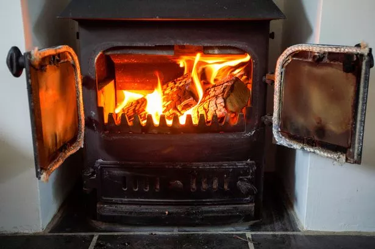
  <figcaption>Hot, clean burns; vent outside; test CO/smoke alarms; and keep clear zones around your stove.</figcaption>
</figure>


    <h2>Copy This: Amish-Style Winter Warmth Checklist</h2>
    <ul>
      <li>Pick one warm room and make it your winter hearth</li>
      <li>Window quilts or heavy curtains—especially north and west exposures</li>
      <li>Draft stoppers for door bottoms and stairwell curtains</li>
      <li>Rugs over slab or above unconditioned space</li>
      <li>Stovetop kettle for humidity; indoor drying rack over safe floor</li>
      <li>Bed warmers or hot water bottles + layered quilts</li>
      <li>Two cords of seasoned hardwood ready <em>before</em> first frost (more for larger, leaky homes)</li>
      <li>Chimney brushed, CO/smoke detectors tested, extinguisher on the wall</li>
    </ul>

    <h2>Gear You Can Use Today</h2>
    <p><em>Modern helpers that keep the spirit, not the grid:</em></p>
    <ul>
      <li>Magnetic <strong>stove thermometer</strong> (stay in the clean burn zone)</li>
      <li><strong>Heat-powered stove fan</strong> (pushes warmth without electricity)</li>
      <li>Cast-iron <strong>kettle</strong> or steamer (humidity bump)</li>
      <li><strong>Wool blanket</strong> + down comforter combo (stack for loft + moisture management)</li>
      <li>Heavy <strong>thermal curtains</strong> or DIY window quilt kits</li>
      <li><strong>Door draft snakes</strong> (DIY with scrap cloth + rice)</li>
      <li><strong>Chimney brush kit</strong> + <strong>metal ash can</strong></li>
      <li>Battery <strong>CO/smoke detector</strong> (one per level, near sleeping areas)</li>
    </ul>

    <h2>Apartment or Mobile Home? Here’s Your Translation</h2>
    <ul>
      <li><strong>No woodstove, no problem:</strong> Make a <em>warm core</em>: one room with heavy curtains over doors, window quilts at night, rugs underfoot, and a kettle simmering on the range during meals.</li>
      <li><strong>Draft control:</strong> Weatherstrip windows; use removable rope caulk or foam for winter; draft snakes for doors; painter’s plastic on leaky sliders.</li>
      <li><strong>Humidity without hazards:</strong> A pot on the stove while you cook; dry a small rack of laundry inside—don’t turn the place into a sauna.</li>
      <li><strong>Night routine:</strong> Hot water bottles, layered quilts, wool socks + cap. It feels old-fashioned because it works.</li>
    </ul>

    <!-- Drop this right under your <h2>Budget Tiers: Start Where You Are</h2> -->
<style>
  .budget-figure{
    margin:14px 0 18px;
    background:var(--panel,#121821);
    border:1px solid var(--line,#1f2a35);
    border-radius:14px;
    overflow:hidden;
    box-shadow:0 0 0 1px rgba(255,122,0,.12), 0 10px 35px rgba(0,0,0,.55);
  }
  .budget-figure img{
    width:100%;
    aspect-ratio:16/9;
    object-fit:cover;
    display:block;
    background:#0f141a;
  }
  .budget-figure figcaption{
    padding:10px 12px;
    color:var(--muted,#9aa3ad);
    font-size:.95rem;
  }
</style>

<figure class="budget-figure">
  
  <figcaption>Plan your winter warmth spend in tiers: quick $0–$50 fixes, $50–$200 upgrades, and $200–$700 whole-room improvements.</figcaption>
</figure>


    <h2>Common Mistakes (and Easy Fixes)</h2>
    <ul>
      <li><strong>Smoldering overnight burns:</strong> Low and smoky wastes wood and feeds creosote. Fix: hot, clean burns with dense wood; right-sized splits; proper draft.</li>
      <li><strong>Heating empty rooms:</strong> Shut doors. Use curtains to zone the house. Warm people, not hallways.</li>
      <li><strong>Over-humidifying:</strong> Windows sweating? Back off steam, crack a vent at the top of a window quilt, add gentle air movement.</li>
      <li><strong>Wet firewood:</strong> If it hisses, it’s stealing heat to boil itself. Fix: split smaller, bring in tomorrow’s wood to warm and dry, stack with airflow.</li>
    </ul>

    <h2>Myth vs. Reality</h2>
    <p><strong>“Amish never use modern fuel.”</strong> Reality: Practices vary by community. Many rely primarily on wood or, in some regions, coal; some use propane for specific tasks. The core principle is the same: low-tech, resilient, disciplined heat.</p>
    <p><strong>“You need a massive stove.”</strong> Reality: You need a right-sized stove in a tight, well-zoned space. Oversized stoves get run cool and dirty; tight spaces with good habits feel warmer on less fuel.</p>

    <h2>Quick Wins You’ll Feel This Week</h2>
    <ol>
      <li>Pick your warm room and commit. Add a doorway curtain today.</li>
      <li>Hang temporary window quilts (blankets + clips) for night use.</li>
      <li>Add a kettle to the stove during cooking hours.</li>
      <li>Lay down rugs over cold floors; slippers by the door.</li>
      <li>Stage wood for tomorrow <em>indoors</em> so it lights clean.</li>
      <li>Bed warmers or hot water bottles 10 minutes before lights-out.</li>
    </ol>

    <h2>Putting It All Together: A One-Room Winter Plan</h2>
    <p>If you only do one thing, do this. Turn one room into a winter haven and stop trying to heat the county.</p>
    <ul>
      <li><strong>Seal the shell:</strong> Weatherstrip the door, draft snake the bottom, window quilt at night, thermal curtain across the widest opening.</li>
      <li><strong>Build the hearth:</strong> One safe, efficient heat source (wood/coal where legal, or efficient alternative) with a fan to move air and a kettle for humidity.</li>
      <li><strong>Furnish for warmth:</strong> Rug under the seating, wool blankets within arm’s reach, a rack for drying mittens and socks, slippers at the threshold.</li>
      <li><strong>Live the rhythm:</strong> Morning fire, afternoon wood prep, evening curtain drop, night bottles in bed. Repeat. Comfort piles up.</li>
    </ul>
  </div>

  <!-- IMAGE GALLERY -->
  <div class="amish-max">
    <h2 id="amish-gallery" style="font-family:Orbitron,system-ui; margin:10px 0 8px;">Amish Winter, In Pictures</h2>
    <div class="amish-gallery">
      <figure class="span-12">
        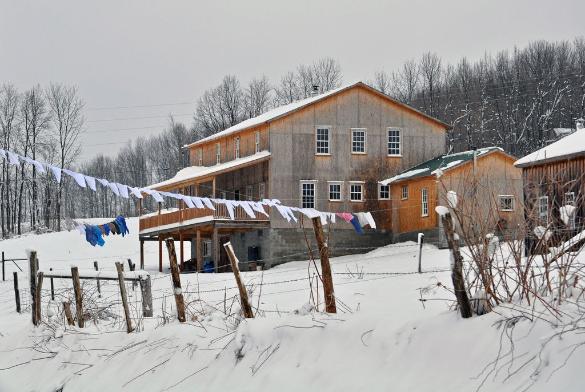
        <figcaption>Amish farmhouse in deep winter. Laundry lines boost indoor humidity — warmth without wires.</figcaption>
      </figure>
      <figure class="span-6">
        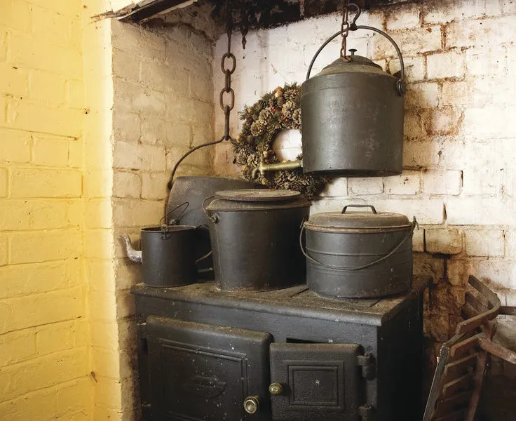
        <figcaption>Cast-iron cookstove = heat + food. A kettle adds moisture for comfort at lower temps.</figcaption>
      </figure>
      <figure class="span-6">
        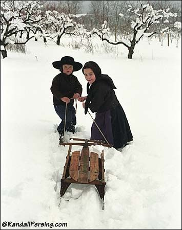
        <figcaption>Movement is part of the plan. Chores and play warm the person first.</figcaption>
      </figure>
      <figure class="span-7">
        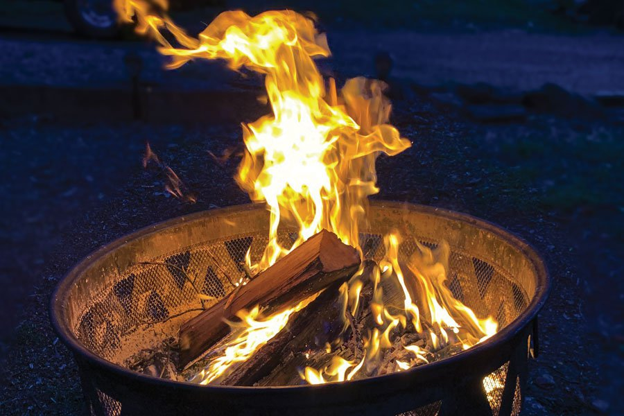
        <figcaption>Seasoned hardwood ready to work. Heat starts months earlier with disciplined wood prep.</figcaption>
      </figure>
      <figure class="span-5">
        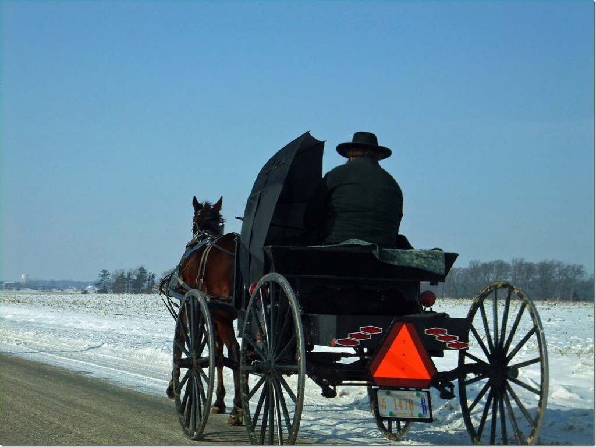
        <figcaption>Snow travel: layers, quilts, and grit carry families through long winters.</figcaption>
      </figure>
    </div>
  </div>

  <div class="divider amish-max"></div>

<!-- UPDATED: real affiliate links using your tag ?tag=gritgearhq-20 -->
<div class="gear-grid">
  <!-- Magnetic stove thermometer -->
  <article class="gear-card">
    <a href="https://amzn.to/46phQoy?tag=gritgearhq-20" target="_blank" rel="nofollow sponsored noopener">
      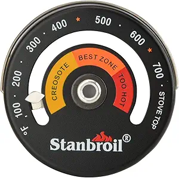
    </a>
    <div class="pad">
      <h3><a href="https://amzn.to/46phQoy?tag=gritgearhq-20" target="_blank" rel="nofollow sponsored noopener">Magnetic Stove Thermometer</a></h3>
      <ul>
        <li>Stay in the clean burn zone</li>
        <li>Creosote / Best / Too-Hot indicators</li>
        <li>Attaches to stovetop or stovepipe</li>
      </ul>
      <div class="buy">
        <a href="https://amzn.to/46phQoy?tag=gritgearhq-20" target="_blank" rel="nofollow sponsored noopener">See price on Amazon</a>
      </div>
    </div>
  </article>

  <!-- Heat-powered stove fan -->
  <article class="gear-card">
    <a href="https://amzn.to/4pcFfB4?tag=gritgearhq-20" target="_blank" rel="nofollow sponsored noopener">
      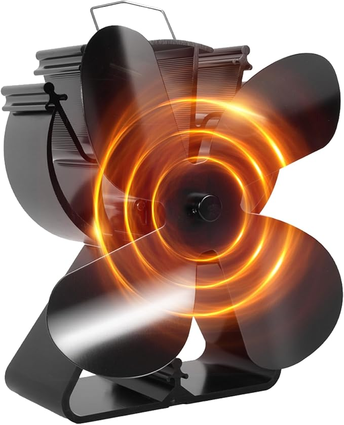
    </a>
    <div class="pad">
      <h3><a href="https://amzn.to/4pcFfB4?tag=gritgearhq-20" target="_blank" rel="nofollow sponsored noopener">Heat-Powered Stove Fan</a></h3>
      <ul>
        <li>Pushes warmth across the room</li>
        <li>No cords or batteries</li>
        <li>Auto-starts when the stove heats up</li>
      </ul>
      <div class="buy">
        <a href="https://amzn.to/4pcFfB4?tag=gritgearhq-20" target="_blank" rel="nofollow sponsored noopener">See price on Amazon</a>
      </div>
    </div>
  </article>

  <!-- Cast-iron kettle / steamer -->
  <article class="gear-card">
    <a href="https://amzn.to/46hm5Bw?tag=gritgearhq-20" target="_blank" rel="nofollow sponsored noopener">
      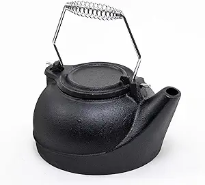
    </a>
    <div class="pad">
      <h3><a href="https://amzn.to/46hm5Bw?tag=gritgearhq-20" target="_blank" rel="nofollow sponsored noopener">Cast-Iron Kettle / Steamer</a></h3>
      <ul>
        <li>Adds humidity for perceived warmth</li>
        <li>Heavy duty—sits right on the stove</li>
        <li>Simple off-grid comfort booster</li>
      </ul>
      <div class="buy">
        <a href="https://amzn.to/46hm5Bw?tag=gritgearhq-20" target="_blank" rel="nofollow sponsored noopener">See price on Amazon</a>
      </div>
    </div>
  </article>

  <!-- Wool blanket -->
  <article class="gear-card">
    <a href="https://amzn.to/46hmbcm?tag=gritgearhq-20" target="_blank" rel="nofollow sponsored noopener">
      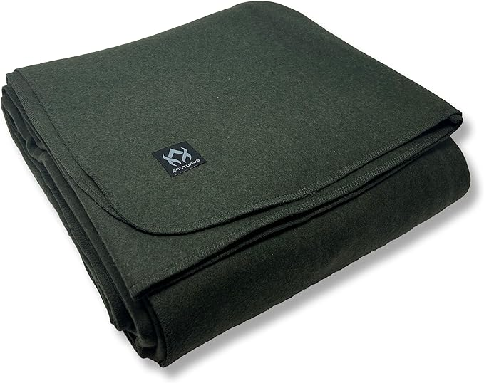
    </a>
    <div class="pad">
      <h3><a href="https://amzn.to/46hmbcm?tag=gritgearhq-20" target="_blank" rel="nofollow sponsored noopener">Wool Blanket</a></h3>
      <ul>
        <li>Insulates even when damp</li>
        <li>Layer with down for max loft</li>
        <li>Amish-style warmth tactic</li>
      </ul>
      <div class="buy">
        <a href="https://amzn.to/46hmbcm?tag=gritgearhq-20" target="_blank" rel="nofollow sponsored noopener">See price on Amazon</a>
      </div>
    </div>
  </article>

  <!-- Thermal curtains / window quilt kit -->
  <article class="gear-card">
    <a href="https://amzn.to/4mRxkHT?tag=gritgearhq-20" target="_blank" rel="nofollow sponsored noopener">
      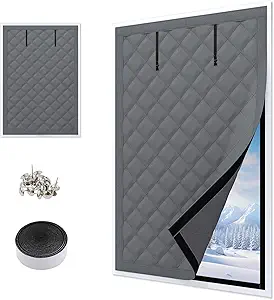
    </a>
    <div class="pad">
      <h3><a href="https://amzn.to/4mRxkHT?tag=gritgearhq-20" target="_blank" rel="nofollow sponsored noopener">Thermal Window Quilt Kit</a></h3>
      <ul>
        <li>Create a still-air “second pane”</li>
        <li>Drop at dusk, lift at dawn</li>
        <li>Big comfort, small cost</li>
      </ul>
      <div class="buy">
        <a href="https://amzn.to/4mRxkHT?tag=gritgearhq-20" target="_blank" rel="nofollow sponsored noopener">See price on Amazon</a>
      </div>
    </div>
  </article>

  <!-- Chimney brush kit + metal ash can -->
  <article class="gear-card">
    <a href="https://amzn.to/41FWQas?tag=gritgearhq-20" target="_blank" rel="nofollow sponsored noopener">
      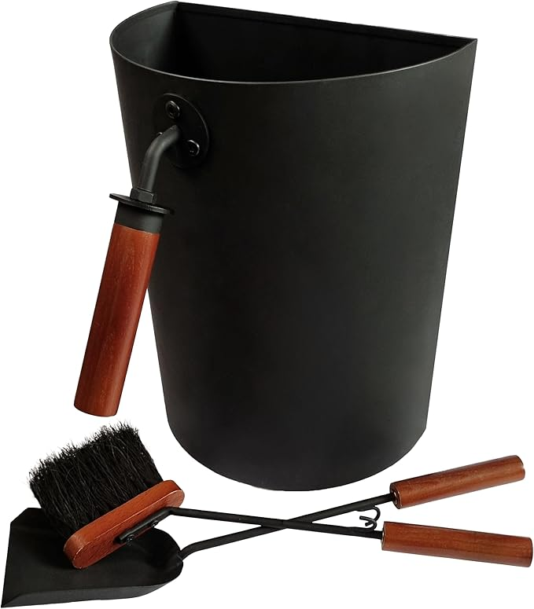
    </a>
    <div class="pad">
      <h3><a href="https://amzn.to/41FWQas?tag=gritgearhq-20" target="_blank" rel="nofollow sponsored noopener">Chimney / Ash Care Kit</a></h3>
      <ul>
        <li>Safe ash storage in metal bin</li>
        <li>Brush &amp; shovel for cleanups</li>
        <li>Pair with mid-season flue brushing</li>
      </ul>
      <div class="buy">
        <a href="https://amzn.to/41FWQas?tag=gritgearhq-20" target="_blank" rel="nofollow sponsored noopener">See price on Amazon</a>
      </div>
    </div>
  </article>
</div>

<p class="disclosure">Disclosure: As an Amazon Associate, we may earn from qualifying purchases at no extra cost to you.</p>

    <p class="disclosure">Disclosure: As an Amazon Associate, we may earn from qualifying purchases at no extra cost to you.</p>
  </div>
</section>
